|
"Quality:
Excellent. Value: Excellent." ... "DPGraph is one of the most exciting
Windows-PC programs I've ever seen for creating beautiful, even stunning,
mathematical graphics.", Dr. Michael W. Ecker,
Recreational & Educational Computing,
and DPGraph runs under Wine on Linux, or under SoftWindows or Virtual PC on
the Mac. |
| 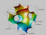 | 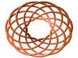 |
| 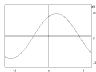 |  |
| 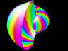 | 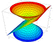 |
| 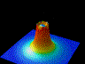 | 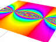 |
| 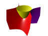 | 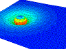 |
| 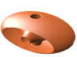 | 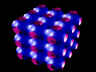 |
| | | |
|
|
|
The world's
most powerful software for math and physics visualization. Create beautiful,
interactive, dynamic, photorealistic 2D, 3D, 4D, 5D, 6D, 7D and 8D graphs. So
easy to use that even junior high and senior high students have had their graphs
published. Includes hundreds of examples contributed by users from around the
world.
Over two million mathematicians, physicists, teachers and
students at over 1,000 colleges, universities and K-12 schools worldwide are
already licensed. Comes with a free subscription to the Flaming Thunder programming
language.
Optimized for the internet -- search for DPGraph using
your favorite search engine to find ways that people are using DPGraph for both
classroom and distance learning. Used for pre-algebra, geometry, trigonometry
and general physics, through multivariable calculus, field theory, quantum
mechanics and gravitation.
Use time and color as extra dimensions
(to create motion or encode momentum, for example). Use the scrollbar to vary
parameters in realtime, to slice through graphs, or to vary transparency.
Programmed entirely in assembly language for maximum speed.
Graph
functions, equations, conic sections, planes, spheres, toruses, parametric
curves and surfaces, implicit equalities and inequalities, volume intersections,
volumes of integration, vector fields, surfaces of revolution, equipotential
surfaces, and much more, in rectangular, polar, cylindrical, or spherical
coordinates. |
| 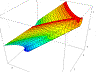 |
 |
|
| 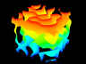 |
 |
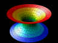 |
|
|
"You'll be dazzled
...", ZDNet
|
 | 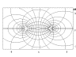 |
| 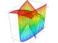 |  |
 | 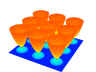 |
| 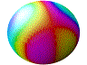 | 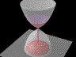 |
 | 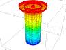 |
| 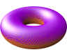 | |
|
|
|